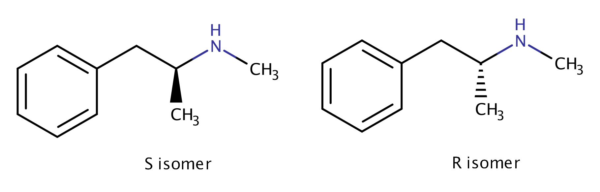
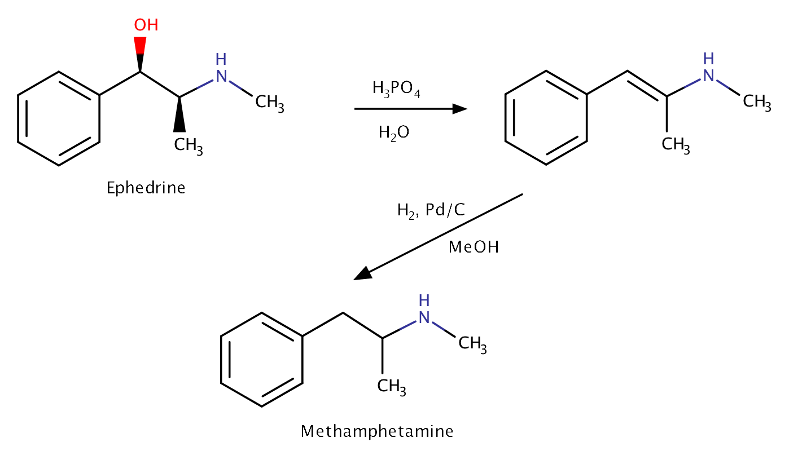

Background
The infamous central nervous stimulant that stereotypically turns otherwise normal people into frothing,
psychotic bandits.
Apparently that methyl group attached the amine allows methamphetamine to cross the blood-brain barrier much
more easily than regular amphetamine, allowing for a more intense (and addictive) rush. The route
of administration certainly plays a role in the addictiveness of this compound as well; smoking or snorting
methamphetamine allegedly causes a more intense but short-lived rush compared to oral administration, meaning
the user is more likely to redose and become increasingly dependent.
Composition
Methamphetamine contains a single chiral center, meaning that a racemic mixture of two enantiomers is generally synthesized,
Dextromethamphetamine and Levomethamphetamine. The difference in effects between these two compounds is quite pronounced; Dextromethamphetamine (the S-isomer) is the very strong,
neurotoxic CNS with such a fearsome repution, while Levomethamphetamine (the R-isomer) acts and is sold as a simple OTC nasal
decongestant.

How Methamphetamine directed the course of World War II
Here's a bit of an interesting story. The Treaty of Versailles was signed on June 28, 1919, officially ending
World War I with the Allied Powers coming out victorious. One of the stipulations
of the treaty was that Germany was to
lose their colonial possessions. This had many detrimental effects on the
German economy, but also had indirect consequences on the country's productivity as a whole.
Just as it is in the United States today, the majority of working
Germans consumed some from of caffeine (a stimulant) on a daily basis, primarily through coffee.
Coffee beans didn't grow well on native German soil, so they depended on their colonial possessions
to import the plant. Naturally with the loss of German colonial possessions came a loss of the necessary
quantity of caffeine to power the German workforce, so pharmaceutical companies lept at the opportunity
to develop a new stimulant that could replace it.
Enter Temmler, a very large pharmaceutical company at the time.
Temmler didn't discover methamphetamine, but they did discover a new method of
synthesizing it. If you're familiar with organic chemistry, the process may be of some
interest to you: the birch reduction of ephedrine, the primary alkaloid in the
Ephedra sinica plant, first removes the hydroxyl group in the benzylic position while also reducing the alkene that forms
immediately thereafter, resulting in a racemic mixture of methamphetamine's enantiomers.
